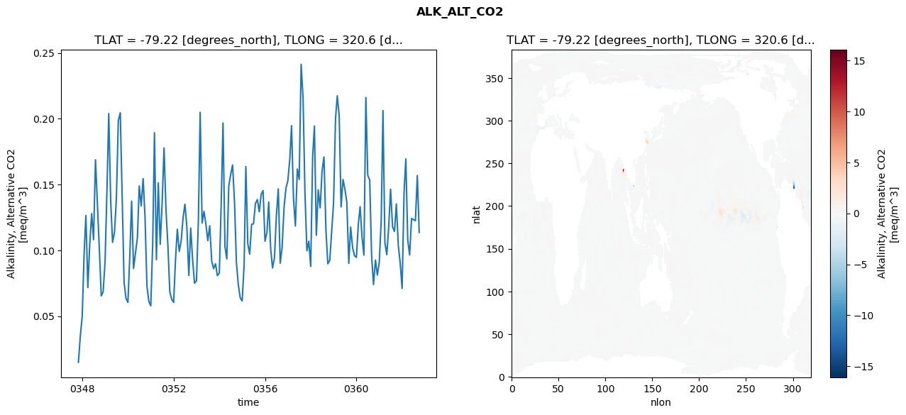
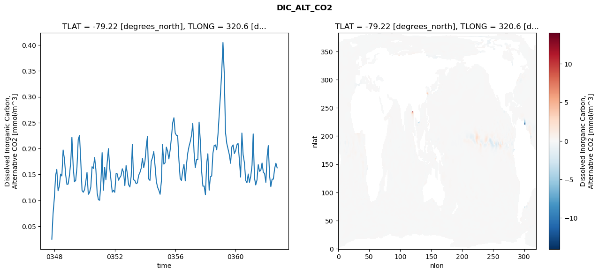
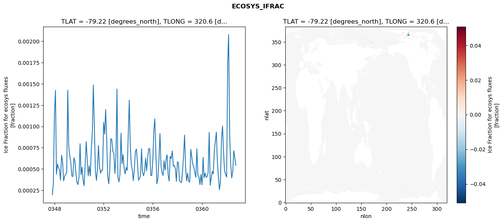
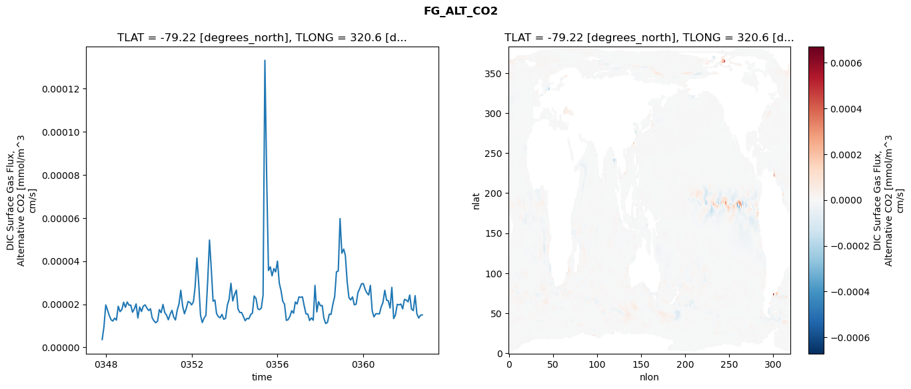

glb-dor_North_Atlantic_basin_033_1999-10-01_00135#
Simulation details#
Case: smyle.cdr-atlas-v0.glb-dor_North_Atlantic_basin_033_1999-10-01_00135.001
Basin: North_Atlantic_basin
Polygon: 33.0
Start date: 1999-10
Show code cell source Hide code cell source
import xarray as xr
import matplotlib.pyplot as plt
Show code cell source Hide code cell source
zarr_store = "/path/to/zarr/store"
# Parameters
zarr_store = "/global/cfs/projectdirs/m4746/Projects/Ocean-CDR-Atlas-v0/data/validation/smyle.cdr-atlas-v0.glb-dor_North_Atlantic_basin_033_1999-10-01_00135.001.validation.zarr"
Show code cell source Hide code cell source
%%time
ds_o = xr.open_zarr(zarr_store).compute()
ds_o
CPU times: user 626 ms, sys: 394 ms, total: 1.02 s
Wall time: 1.27 s
<xarray.Dataset> Size: 2MB
Dimensions: (nlat: 384, nlon: 320, time: 180)
Coordinates:
TLAT float64 8B -79.22
TLONG float64 8B 320.6
ULAT float64 8B -78.95
ULONG float64 8B 321.1
* time (time) object 1kB 0347-11-01 00:00:00 ... 0362-10-01 0...
z_t float32 4B 500.0
Dimensions without coordinates: nlat, nlon
Data variables:
ALK_ALT_CO2_diff (nlat, nlon) float32 492kB nan nan nan ... nan nan nan
ALK_ALT_CO2_rmse (time) float64 1kB 0.01497 0.03453 ... 0.1569 0.1136
DIC_ALT_CO2_diff (nlat, nlon) float32 492kB nan nan nan ... nan nan nan
DIC_ALT_CO2_rmse (time) float64 1kB 0.02504 0.07457 ... 0.1717 0.1627
ECOSYS_IFRAC_diff (nlat, nlon) float32 492kB nan nan nan ... nan nan nan
ECOSYS_IFRAC_rmse (time) float64 1kB 0.000198 0.0003324 ... 0.0005436
FG_ALT_CO2_diff (nlat, nlon) float32 492kB nan nan nan ... nan nan nan
FG_ALT_CO2_rmse (time) float64 1kB 3.611e-06 9.502e-06 ... 1.509e-05xarray.Dataset
- nlat: 384
- nlon: 320
- time: 180
- TLAT()float64-79.22
- long_name :
- array of t-grid latitudes
- units :
- degrees_north
array(-79.22052261)
- TLONG()float64320.6
- long_name :
- array of t-grid longitudes
- units :
- degrees_east
array(320.56250892)
- ULAT()float64-78.95
- long_name :
- array of u-grid latitudes
- units :
- degrees_north
array(-78.95289509)
- ULONG()float64321.1
- long_name :
- array of u-grid longitudes
- units :
- degrees_east
array(321.12500894)
- time(time)object0347-11-01 00:00:00 ... 0362-10-...
- bounds :
- time_bound
- long_name :
- time
array([cftime.DatetimeNoLeap(347, 11, 1, 0, 0, 0, 0, has_year_zero=True), cftime.DatetimeNoLeap(347, 12, 1, 0, 0, 0, 0, has_year_zero=True), cftime.DatetimeNoLeap(348, 1, 1, 0, 0, 0, 0, has_year_zero=True), cftime.DatetimeNoLeap(348, 2, 1, 0, 0, 0, 0, has_year_zero=True), cftime.DatetimeNoLeap(348, 3, 1, 0, 0, 0, 0, has_year_zero=True), cftime.DatetimeNoLeap(348, 4, 1, 0, 0, 0, 0, has_year_zero=True), cftime.DatetimeNoLeap(348, 5, 1, 0, 0, 0, 0, has_year_zero=True), cftime.DatetimeNoLeap(348, 6, 1, 0, 0, 0, 0, has_year_zero=True), cftime.DatetimeNoLeap(348, 7, 1, 0, 0, 0, 0, has_year_zero=True), cftime.DatetimeNoLeap(348, 8, 1, 0, 0, 0, 0, has_year_zero=True), cftime.DatetimeNoLeap(348, 9, 1, 0, 0, 0, 0, has_year_zero=True), cftime.DatetimeNoLeap(348, 10, 1, 0, 0, 0, 0, has_year_zero=True), cftime.DatetimeNoLeap(348, 11, 1, 0, 0, 0, 0, has_year_zero=True), cftime.DatetimeNoLeap(348, 12, 1, 0, 0, 0, 0, has_year_zero=True), cftime.DatetimeNoLeap(349, 1, 1, 0, 0, 0, 0, has_year_zero=True), cftime.DatetimeNoLeap(349, 2, 1, 0, 0, 0, 0, has_year_zero=True), cftime.DatetimeNoLeap(349, 3, 1, 0, 0, 0, 0, has_year_zero=True), cftime.DatetimeNoLeap(349, 4, 1, 0, 0, 0, 0, has_year_zero=True), cftime.DatetimeNoLeap(349, 5, 1, 0, 0, 0, 0, has_year_zero=True), cftime.DatetimeNoLeap(349, 6, 1, 0, 0, 0, 0, has_year_zero=True), cftime.DatetimeNoLeap(349, 7, 1, 0, 0, 0, 0, has_year_zero=True), cftime.DatetimeNoLeap(349, 8, 1, 0, 0, 0, 0, has_year_zero=True), cftime.DatetimeNoLeap(349, 9, 1, 0, 0, 0, 0, has_year_zero=True), cftime.DatetimeNoLeap(349, 10, 1, 0, 0, 0, 0, has_year_zero=True), cftime.DatetimeNoLeap(349, 11, 1, 0, 0, 0, 0, has_year_zero=True), cftime.DatetimeNoLeap(349, 12, 1, 0, 0, 0, 0, has_year_zero=True), cftime.DatetimeNoLeap(350, 1, 1, 0, 0, 0, 0, has_year_zero=True), cftime.DatetimeNoLeap(350, 2, 1, 0, 0, 0, 0, has_year_zero=True), cftime.DatetimeNoLeap(350, 3, 1, 0, 0, 0, 0, has_year_zero=True), cftime.DatetimeNoLeap(350, 4, 1, 0, 0, 0, 0, has_year_zero=True), cftime.DatetimeNoLeap(350, 5, 1, 0, 0, 0, 0, has_year_zero=True), cftime.DatetimeNoLeap(350, 6, 1, 0, 0, 0, 0, has_year_zero=True), cftime.DatetimeNoLeap(350, 7, 1, 0, 0, 0, 0, has_year_zero=True), cftime.DatetimeNoLeap(350, 8, 1, 0, 0, 0, 0, has_year_zero=True), cftime.DatetimeNoLeap(350, 9, 1, 0, 0, 0, 0, has_year_zero=True), cftime.DatetimeNoLeap(350, 10, 1, 0, 0, 0, 0, has_year_zero=True), cftime.DatetimeNoLeap(350, 11, 1, 0, 0, 0, 0, has_year_zero=True), cftime.DatetimeNoLeap(350, 12, 1, 0, 0, 0, 0, has_year_zero=True), cftime.DatetimeNoLeap(351, 1, 1, 0, 0, 0, 0, has_year_zero=True), cftime.DatetimeNoLeap(351, 2, 1, 0, 0, 0, 0, has_year_zero=True), cftime.DatetimeNoLeap(351, 3, 1, 0, 0, 0, 0, has_year_zero=True), cftime.DatetimeNoLeap(351, 4, 1, 0, 0, 0, 0, has_year_zero=True), cftime.DatetimeNoLeap(351, 5, 1, 0, 0, 0, 0, has_year_zero=True), cftime.DatetimeNoLeap(351, 6, 1, 0, 0, 0, 0, has_year_zero=True), cftime.DatetimeNoLeap(351, 7, 1, 0, 0, 0, 0, has_year_zero=True), cftime.DatetimeNoLeap(351, 8, 1, 0, 0, 0, 0, has_year_zero=True), cftime.DatetimeNoLeap(351, 9, 1, 0, 0, 0, 0, has_year_zero=True), cftime.DatetimeNoLeap(351, 10, 1, 0, 0, 0, 0, has_year_zero=True), cftime.DatetimeNoLeap(351, 11, 1, 0, 0, 0, 0, has_year_zero=True), cftime.DatetimeNoLeap(351, 12, 1, 0, 0, 0, 0, has_year_zero=True), cftime.DatetimeNoLeap(352, 1, 1, 0, 0, 0, 0, has_year_zero=True), cftime.DatetimeNoLeap(352, 2, 1, 0, 0, 0, 0, has_year_zero=True), cftime.DatetimeNoLeap(352, 3, 1, 0, 0, 0, 0, has_year_zero=True), cftime.DatetimeNoLeap(352, 4, 1, 0, 0, 0, 0, has_year_zero=True), cftime.DatetimeNoLeap(352, 5, 1, 0, 0, 0, 0, has_year_zero=True), cftime.DatetimeNoLeap(352, 6, 1, 0, 0, 0, 0, has_year_zero=True), cftime.DatetimeNoLeap(352, 7, 1, 0, 0, 0, 0, has_year_zero=True), cftime.DatetimeNoLeap(352, 8, 1, 0, 0, 0, 0, has_year_zero=True), cftime.DatetimeNoLeap(352, 9, 1, 0, 0, 0, 0, has_year_zero=True), cftime.DatetimeNoLeap(352, 10, 1, 0, 0, 0, 0, has_year_zero=True), cftime.DatetimeNoLeap(352, 11, 1, 0, 0, 0, 0, has_year_zero=True), cftime.DatetimeNoLeap(352, 12, 1, 0, 0, 0, 0, has_year_zero=True), cftime.DatetimeNoLeap(353, 1, 1, 0, 0, 0, 0, has_year_zero=True), cftime.DatetimeNoLeap(353, 2, 1, 0, 0, 0, 0, has_year_zero=True), cftime.DatetimeNoLeap(353, 3, 1, 0, 0, 0, 0, has_year_zero=True), cftime.DatetimeNoLeap(353, 4, 1, 0, 0, 0, 0, has_year_zero=True), cftime.DatetimeNoLeap(353, 5, 1, 0, 0, 0, 0, has_year_zero=True), cftime.DatetimeNoLeap(353, 6, 1, 0, 0, 0, 0, has_year_zero=True), cftime.DatetimeNoLeap(353, 7, 1, 0, 0, 0, 0, has_year_zero=True), cftime.DatetimeNoLeap(353, 8, 1, 0, 0, 0, 0, has_year_zero=True), cftime.DatetimeNoLeap(353, 9, 1, 0, 0, 0, 0, has_year_zero=True), cftime.DatetimeNoLeap(353, 10, 1, 0, 0, 0, 0, has_year_zero=True), cftime.DatetimeNoLeap(353, 11, 1, 0, 0, 0, 0, has_year_zero=True), cftime.DatetimeNoLeap(353, 12, 1, 0, 0, 0, 0, has_year_zero=True), cftime.DatetimeNoLeap(354, 1, 1, 0, 0, 0, 0, has_year_zero=True), cftime.DatetimeNoLeap(354, 2, 1, 0, 0, 0, 0, has_year_zero=True), cftime.DatetimeNoLeap(354, 3, 1, 0, 0, 0, 0, has_year_zero=True), cftime.DatetimeNoLeap(354, 4, 1, 0, 0, 0, 0, has_year_zero=True), cftime.DatetimeNoLeap(354, 5, 1, 0, 0, 0, 0, has_year_zero=True), cftime.DatetimeNoLeap(354, 6, 1, 0, 0, 0, 0, has_year_zero=True), cftime.DatetimeNoLeap(354, 7, 1, 0, 0, 0, 0, has_year_zero=True), cftime.DatetimeNoLeap(354, 8, 1, 0, 0, 0, 0, has_year_zero=True), cftime.DatetimeNoLeap(354, 9, 1, 0, 0, 0, 0, has_year_zero=True), cftime.DatetimeNoLeap(354, 10, 1, 0, 0, 0, 0, has_year_zero=True), cftime.DatetimeNoLeap(354, 11, 1, 0, 0, 0, 0, has_year_zero=True), cftime.DatetimeNoLeap(354, 12, 1, 0, 0, 0, 0, has_year_zero=True), cftime.DatetimeNoLeap(355, 1, 1, 0, 0, 0, 0, has_year_zero=True), cftime.DatetimeNoLeap(355, 2, 1, 0, 0, 0, 0, has_year_zero=True), cftime.DatetimeNoLeap(355, 3, 1, 0, 0, 0, 0, has_year_zero=True), cftime.DatetimeNoLeap(355, 4, 1, 0, 0, 0, 0, has_year_zero=True), cftime.DatetimeNoLeap(355, 5, 1, 0, 0, 0, 0, has_year_zero=True), cftime.DatetimeNoLeap(355, 6, 1, 0, 0, 0, 0, has_year_zero=True), cftime.DatetimeNoLeap(355, 7, 1, 0, 0, 0, 0, has_year_zero=True), cftime.DatetimeNoLeap(355, 8, 1, 0, 0, 0, 0, has_year_zero=True), cftime.DatetimeNoLeap(355, 9, 1, 0, 0, 0, 0, has_year_zero=True), cftime.DatetimeNoLeap(355, 10, 1, 0, 0, 0, 0, has_year_zero=True), cftime.DatetimeNoLeap(355, 11, 1, 0, 0, 0, 0, has_year_zero=True), cftime.DatetimeNoLeap(355, 12, 1, 0, 0, 0, 0, has_year_zero=True), cftime.DatetimeNoLeap(356, 1, 1, 0, 0, 0, 0, has_year_zero=True), cftime.DatetimeNoLeap(356, 2, 1, 0, 0, 0, 0, has_year_zero=True), cftime.DatetimeNoLeap(356, 3, 1, 0, 0, 0, 0, has_year_zero=True), cftime.DatetimeNoLeap(356, 4, 1, 0, 0, 0, 0, has_year_zero=True), cftime.DatetimeNoLeap(356, 5, 1, 0, 0, 0, 0, has_year_zero=True), cftime.DatetimeNoLeap(356, 6, 1, 0, 0, 0, 0, has_year_zero=True), cftime.DatetimeNoLeap(356, 7, 1, 0, 0, 0, 0, has_year_zero=True), cftime.DatetimeNoLeap(356, 8, 1, 0, 0, 0, 0, has_year_zero=True), cftime.DatetimeNoLeap(356, 9, 1, 0, 0, 0, 0, has_year_zero=True), cftime.DatetimeNoLeap(356, 10, 1, 0, 0, 0, 0, has_year_zero=True), cftime.DatetimeNoLeap(356, 11, 1, 0, 0, 0, 0, has_year_zero=True), cftime.DatetimeNoLeap(356, 12, 1, 0, 0, 0, 0, has_year_zero=True), cftime.DatetimeNoLeap(357, 1, 1, 0, 0, 0, 0, has_year_zero=True), cftime.DatetimeNoLeap(357, 2, 1, 0, 0, 0, 0, has_year_zero=True), cftime.DatetimeNoLeap(357, 3, 1, 0, 0, 0, 0, has_year_zero=True), cftime.DatetimeNoLeap(357, 4, 1, 0, 0, 0, 0, has_year_zero=True), cftime.DatetimeNoLeap(357, 5, 1, 0, 0, 0, 0, has_year_zero=True), cftime.DatetimeNoLeap(357, 6, 1, 0, 0, 0, 0, has_year_zero=True), cftime.DatetimeNoLeap(357, 7, 1, 0, 0, 0, 0, has_year_zero=True), cftime.DatetimeNoLeap(357, 8, 1, 0, 0, 0, 0, has_year_zero=True), cftime.DatetimeNoLeap(357, 9, 1, 0, 0, 0, 0, has_year_zero=True), cftime.DatetimeNoLeap(357, 10, 1, 0, 0, 0, 0, has_year_zero=True), cftime.DatetimeNoLeap(357, 11, 1, 0, 0, 0, 0, has_year_zero=True), cftime.DatetimeNoLeap(357, 12, 1, 0, 0, 0, 0, has_year_zero=True), cftime.DatetimeNoLeap(358, 1, 1, 0, 0, 0, 0, has_year_zero=True), cftime.DatetimeNoLeap(358, 2, 1, 0, 0, 0, 0, has_year_zero=True), cftime.DatetimeNoLeap(358, 3, 1, 0, 0, 0, 0, has_year_zero=True), cftime.DatetimeNoLeap(358, 4, 1, 0, 0, 0, 0, has_year_zero=True), cftime.DatetimeNoLeap(358, 5, 1, 0, 0, 0, 0, has_year_zero=True), cftime.DatetimeNoLeap(358, 6, 1, 0, 0, 0, 0, has_year_zero=True), cftime.DatetimeNoLeap(358, 7, 1, 0, 0, 0, 0, has_year_zero=True), cftime.DatetimeNoLeap(358, 8, 1, 0, 0, 0, 0, has_year_zero=True), cftime.DatetimeNoLeap(358, 9, 1, 0, 0, 0, 0, has_year_zero=True), cftime.DatetimeNoLeap(358, 10, 1, 0, 0, 0, 0, has_year_zero=True), cftime.DatetimeNoLeap(358, 11, 1, 0, 0, 0, 0, has_year_zero=True), cftime.DatetimeNoLeap(358, 12, 1, 0, 0, 0, 0, has_year_zero=True), cftime.DatetimeNoLeap(359, 1, 1, 0, 0, 0, 0, has_year_zero=True), cftime.DatetimeNoLeap(359, 2, 1, 0, 0, 0, 0, has_year_zero=True), cftime.DatetimeNoLeap(359, 3, 1, 0, 0, 0, 0, has_year_zero=True), cftime.DatetimeNoLeap(359, 4, 1, 0, 0, 0, 0, has_year_zero=True), cftime.DatetimeNoLeap(359, 5, 1, 0, 0, 0, 0, has_year_zero=True), cftime.DatetimeNoLeap(359, 6, 1, 0, 0, 0, 0, has_year_zero=True), cftime.DatetimeNoLeap(359, 7, 1, 0, 0, 0, 0, has_year_zero=True), cftime.DatetimeNoLeap(359, 8, 1, 0, 0, 0, 0, has_year_zero=True), cftime.DatetimeNoLeap(359, 9, 1, 0, 0, 0, 0, has_year_zero=True), cftime.DatetimeNoLeap(359, 10, 1, 0, 0, 0, 0, has_year_zero=True), cftime.DatetimeNoLeap(359, 11, 1, 0, 0, 0, 0, has_year_zero=True), cftime.DatetimeNoLeap(359, 12, 1, 0, 0, 0, 0, has_year_zero=True), cftime.DatetimeNoLeap(360, 1, 1, 0, 0, 0, 0, has_year_zero=True), cftime.DatetimeNoLeap(360, 2, 1, 0, 0, 0, 0, has_year_zero=True), cftime.DatetimeNoLeap(360, 3, 1, 0, 0, 0, 0, has_year_zero=True), cftime.DatetimeNoLeap(360, 4, 1, 0, 0, 0, 0, has_year_zero=True), cftime.DatetimeNoLeap(360, 5, 1, 0, 0, 0, 0, has_year_zero=True), cftime.DatetimeNoLeap(360, 6, 1, 0, 0, 0, 0, has_year_zero=True), cftime.DatetimeNoLeap(360, 7, 1, 0, 0, 0, 0, has_year_zero=True), cftime.DatetimeNoLeap(360, 8, 1, 0, 0, 0, 0, has_year_zero=True), cftime.DatetimeNoLeap(360, 9, 1, 0, 0, 0, 0, has_year_zero=True), cftime.DatetimeNoLeap(360, 10, 1, 0, 0, 0, 0, has_year_zero=True), cftime.DatetimeNoLeap(360, 11, 1, 0, 0, 0, 0, has_year_zero=True), cftime.DatetimeNoLeap(360, 12, 1, 0, 0, 0, 0, has_year_zero=True), cftime.DatetimeNoLeap(361, 1, 1, 0, 0, 0, 0, has_year_zero=True), cftime.DatetimeNoLeap(361, 2, 1, 0, 0, 0, 0, has_year_zero=True), cftime.DatetimeNoLeap(361, 3, 1, 0, 0, 0, 0, has_year_zero=True), cftime.DatetimeNoLeap(361, 4, 1, 0, 0, 0, 0, has_year_zero=True), cftime.DatetimeNoLeap(361, 5, 1, 0, 0, 0, 0, has_year_zero=True), cftime.DatetimeNoLeap(361, 6, 1, 0, 0, 0, 0, has_year_zero=True), cftime.DatetimeNoLeap(361, 7, 1, 0, 0, 0, 0, has_year_zero=True), cftime.DatetimeNoLeap(361, 8, 1, 0, 0, 0, 0, has_year_zero=True), cftime.DatetimeNoLeap(361, 9, 1, 0, 0, 0, 0, has_year_zero=True), cftime.DatetimeNoLeap(361, 10, 1, 0, 0, 0, 0, has_year_zero=True), cftime.DatetimeNoLeap(361, 11, 1, 0, 0, 0, 0, has_year_zero=True), cftime.DatetimeNoLeap(361, 12, 1, 0, 0, 0, 0, has_year_zero=True), cftime.DatetimeNoLeap(362, 1, 1, 0, 0, 0, 0, has_year_zero=True), cftime.DatetimeNoLeap(362, 2, 1, 0, 0, 0, 0, has_year_zero=True), cftime.DatetimeNoLeap(362, 3, 1, 0, 0, 0, 0, has_year_zero=True), cftime.DatetimeNoLeap(362, 4, 1, 0, 0, 0, 0, has_year_zero=True), cftime.DatetimeNoLeap(362, 5, 1, 0, 0, 0, 0, has_year_zero=True), cftime.DatetimeNoLeap(362, 6, 1, 0, 0, 0, 0, has_year_zero=True), cftime.DatetimeNoLeap(362, 7, 1, 0, 0, 0, 0, has_year_zero=True), cftime.DatetimeNoLeap(362, 8, 1, 0, 0, 0, 0, has_year_zero=True), cftime.DatetimeNoLeap(362, 9, 1, 0, 0, 0, 0, has_year_zero=True), cftime.DatetimeNoLeap(362, 10, 1, 0, 0, 0, 0, has_year_zero=True)], dtype=object) - z_t()float32500.0
- long_name :
- depth from surface to midpoint of layer
- positive :
- down
- units :
- centimeters
- valid_max :
- 537500.0
- valid_min :
- 500.0
array(500., dtype=float32)
- ALK_ALT_CO2_diff(nlat, nlon)float32nan nan nan nan ... nan nan nan nan
- cell_methods :
- time: mean
- grid_loc :
- 3111
- long_name :
- Alkalinity, Alternative CO2
- units :
- meq/m^3
array([[ nan, nan, nan, ..., nan, nan, nan], [ nan, nan, nan, ..., nan, nan, nan], [0.00952148, 0.00927734, 0.00463867, ..., nan, nan, nan], ..., [ nan, nan, nan, ..., nan, nan, nan], [ nan, nan, nan, ..., nan, nan, nan], [ nan, nan, nan, ..., nan, nan, nan]], dtype=float32) - ALK_ALT_CO2_rmse(time)float640.01497 0.03453 ... 0.1569 0.1136
- cell_methods :
- time: mean
- grid_loc :
- 3111
- long_name :
- Alkalinity, Alternative CO2
- units :
- meq/m^3
array([0.01496733, 0.03453227, 0.05001303, 0.09840034, 0.12652241, 0.07176624, 0.10450537, 0.12794602, 0.10813051, 0.16885426, 0.13484952, 0.10179695, 0.06540666, 0.06847166, 0.09125895, 0.1469535 , 0.20393199, 0.1371416 , 0.10611476, 0.1139622 , 0.13946034, 0.19874087, 0.20447613, 0.14196051, 0.07573847, 0.0636157 , 0.06049127, 0.09682192, 0.13740229, 0.08629209, 0.09766859, 0.10933586, 0.14893546, 0.13374625, 0.15444146, 0.12565541, 0.07285095, 0.06135157, 0.05783384, 0.10522975, 0.18932329, 0.09289304, 0.15127339, 0.10464991, 0.13522389, 0.17779502, 0.13078945, 0.1044747 , 0.06865315, 0.06286879, 0.06049173, 0.09360325, 0.11603236, 0.09921396, 0.10682277, 0.12475939, 0.1350439 , 0.11759567, 0.08094618, 0.11693881, 0.09264816, 0.0750706 , 0.07681217, 0.12326382, 0.20484444, 0.12078331, 0.12959007, 0.11972192, 0.1074027 , 0.11862501, 0.09223437, 0.08609606, 0.08984269, 0.08082544, 0.08265513, 0.13735238, 0.19675497, 0.10279308, 0.0935131 , 0.14904958, 0.15746363, 0.16488085, 0.13640566, 0.09075715, 0.07369642, 0.06394921, 0.06152886, 0.08870945, 0.16365483, 0.10500335, 0.09721935, 0.11976372, 0.12018537, 0.13560328, 0.13861316, 0.12929096, 0.14273921, 0.1454178 , 0.10695681, 0.11377101, 0.1367084 , 0.10161562, 0.08664344, 0.09434441, 0.12601374, 0.14670795, 0.09022757, 0.10237229, 0.13258509, 0.14720591, 0.15296336, 0.16940026, 0.19471508, 0.1393116 , 0.11848233, 0.16183096, 0.15390241, 0.24130015, 0.21534869, 0.14366536, 0.09969272, 0.10694852, 0.08777377, 0.17133195, 0.19440865, 0.11146448, 0.14599225, 0.13229245, 0.15992882, 0.17096743, 0.11552454, 0.08978849, 0.09245224, 0.11405764, 0.13608963, 0.19974646, 0.2174165 , 0.20215094, 0.13299851, 0.15382173, 0.14662837, 0.13644212, 0.09017832, 0.11767497, 0.10205941, 0.09601808, 0.09469725, 0.12020555, 0.13316497, 0.10994487, 0.09636112, 0.21612696, 0.15704051, 0.15346275, 0.09574209, 0.07405289, 0.09266342, 0.08121843, 0.09083282, 0.12287117, 0.20619057, 0.10572002, 0.09672648, 0.11801502, 0.14647619, 0.11793317, 0.1144029 , 0.1352803 , 0.10370863, 0.09043969, 0.07105653, 0.14407954, 0.16945323, 0.10787826, 0.09645605, 0.12422362, 0.12341039, 0.12251413, 0.15686252, 0.11361717]) - DIC_ALT_CO2_diff(nlat, nlon)float32nan nan nan nan ... nan nan nan nan
- cell_methods :
- time: mean
- grid_loc :
- 3111
- long_name :
- Dissolved Inorganic Carbon, Alternative CO2
- units :
- mmol/m^3
array([[ nan, nan, nan, ..., nan, nan, nan], [ nan, nan, nan, ..., nan, nan, nan], [-0.00073242, 0.00048828, -0.00415039, ..., nan, nan, nan], ..., [ nan, nan, nan, ..., nan, nan, nan], [ nan, nan, nan, ..., nan, nan, nan], [ nan, nan, nan, ..., nan, nan, nan]], dtype=float32) - DIC_ALT_CO2_rmse(time)float640.02504 0.07457 ... 0.1717 0.1627
- cell_methods :
- time: mean
- grid_loc :
- 3111
- long_name :
- Dissolved Inorganic Carbon, Alternative CO2
- units :
- mmol/m^3
array([0.02504402, 0.07456546, 0.10514747, 0.14837324, 0.1597246 , 0.1185027 , 0.12739036, 0.15074063, 0.14709846, 0.1972008 , 0.18039858, 0.14961416, 0.13074298, 0.13157964, 0.14863297, 0.17396477, 0.22183297, 0.16532637, 0.13585526, 0.13874423, 0.16364582, 0.21756275, 0.22538371, 0.17616652, 0.11908823, 0.11571053, 0.12061131, 0.13692836, 0.15405382, 0.11165621, 0.11510892, 0.12608043, 0.16495812, 0.16158627, 0.18275946, 0.15960875, 0.11449995, 0.10148395, 0.10019817, 0.13782103, 0.19214822, 0.1196558 , 0.16396381, 0.13982674, 0.17296562, 0.19989435, 0.16207883, 0.13954837, 0.11590265, 0.11952789, 0.11560443, 0.15165473, 0.15117457, 0.13889265, 0.14365176, 0.14766933, 0.161085 , 0.15410899, 0.12847118, 0.16734842, 0.15101893, 0.13017178, 0.12585634, 0.14660103, 0.20788964, 0.13987294, 0.13823756, 0.13214492, 0.13375086, 0.14838826, 0.15393074, 0.16209963, 0.18114434, 0.16308958, 0.17578231, 0.2048233 , 0.2233236 , 0.14118118, 0.13851877, 0.17542654, 0.18253809, 0.19423318, 0.16674857, 0.13680462, 0.12541118, 0.11974319, 0.11171336, 0.13740148, 0.20755433, 0.16999625, 0.17258742, 0.20288275, 0.19473608, 0.17996046, 0.1974445 , 0.22076058, 0.24989655, 0.2595015 , 0.22999435, 0.22527199, 0.22508126, 0.17726226, 0.14222423, 0.13846748, 0.15709316, 0.16959117, 0.13757106, 0.16990188, 0.19170312, 0.20434952, 0.21386674, 0.22658 , 0.24864359, 0.1933766 , 0.1631395 , 0.17871833, 0.17833245, 0.25109598, 0.21339525, 0.15657408, 0.12741503, 0.12765679, 0.11095934, 0.172241 , 0.19001511, 0.1195831 , 0.14563665, 0.14704379, 0.19086731, 0.20606874, 0.20698184, 0.19769042, 0.22798468, 0.26630038, 0.3074929 , 0.35250465, 0.40472754, 0.34430784, 0.23121975, 0.20992353, 0.19945676, 0.18833974, 0.17157321, 0.20334246, 0.20705725, 0.19041798, 0.19606503, 0.20730485, 0.21014889, 0.17826382, 0.14495699, 0.22996813, 0.18803 , 0.17279318, 0.13865498, 0.13397388, 0.15085565, 0.13482836, 0.14672147, 0.16782687, 0.22831289, 0.14340753, 0.12976269, 0.13937158, 0.1690266 , 0.15606611, 0.1578941 , 0.17215631, 0.15398348, 0.15188781, 0.13475833, 0.18516356, 0.20567161, 0.14756249, 0.12655529, 0.14086916, 0.14096388, 0.16141741, 0.17172226, 0.16271842]) - ECOSYS_IFRAC_diff(nlat, nlon)float32nan nan nan nan ... nan nan nan nan
- cell_methods :
- time: mean
- grid_loc :
- 2110
- long_name :
- Ice Fraction for ecosys fluxes
- units :
- fraction
array([[ nan, nan, nan, ..., nan, nan, nan], [ nan, nan, nan, ..., nan, nan, nan], [5.3644180e-07, 1.1324883e-06, 3.2782555e-06, ..., nan, nan, nan], ..., [ nan, nan, nan, ..., nan, nan, nan], [ nan, nan, nan, ..., nan, nan, nan], [ nan, nan, nan, ..., nan, nan, nan]], dtype=float32) - ECOSYS_IFRAC_rmse(time)float640.000198 0.0003324 ... 0.0005436
- cell_methods :
- time: mean
- grid_loc :
- 2110
- long_name :
- Ice Fraction for ecosys fluxes
- units :
- fraction
array([0.00019803, 0.00033237, 0.0011415 , 0.00142379, 0.00043797, 0.00055845, 0.00051165, 0.00049442, 0.00036778, 0.00066238, 0.0005818 , 0.00036049, 0.00041487, 0.00043527, 0.00046236, 0.00142669, 0.00077083, 0.00065578, 0.00058053, 0.00041729, 0.00041111, 0.00063264, 0.0005968 , 0.00044581, 0.00034244, 0.0003166 , 0.00040755, 0.00079671, 0.00043178, 0.0005202 , 0.00037309, 0.00030305, 0.0005374 , 0.00082197, 0.00061873, 0.00041942, 0.00053819, 0.00041798, 0.00073254, 0.00094458, 0.00148677, 0.00100016, 0.00048253, 0.00036574, 0.00049038, 0.00077689, 0.00053033, 0.00045027, 0.00048452, 0.00048462, 0.00104839, 0.00091019, 0.00119876, 0.00086194, 0.00042033, 0.00032526, 0.00048135, 0.00085701, 0.00084474, 0.00070575, 0.0006873 , 0.00044761, 0.00065609, 0.00143947, 0.0004007 , 0.00034867, 0.00043772, 0.00092201, 0.0005599 , 0.00066958, 0.00050951, 0.00044252, 0.00051809, 0.00048423, 0.00089552, 0.00131 , 0.00079455, 0.00055305, 0.00049437, 0.00036256, 0.00049895, 0.00070007, 0.00073513, 0.00057591, 0.00036931, 0.00038268, 0.00042561, 0.00073749, 0.00046736, 0.0004208 , 0.00046911, 0.00062846, 0.00047803, 0.00063582, 0.00074054, 0.00073748, 0.00042285, 0.00042564, 0.00060561, 0.0009669 , 0.00108819, 0.00068583, 0.00032616, 0.00039025, 0.00060271, 0.00091577, 0.00053507, 0.00045514, 0.00042389, 0.00059661, 0.00048655, 0.00062463, 0.00066659, 0.00042695, 0.00035742, 0.00064916, 0.00062387, 0.00071219, 0.00053466, 0.0005431 , 0.0005044 , 0.00035426, 0.00058336, 0.00057376, 0.00036022, 0.00035082, 0.00033863, 0.00047695, 0.00065036, 0.00089927, 0.00050816, 0.00036007, 0.00045245, 0.00035571, 0.00034495, 0.00073244, 0.00064521, 0.00055072, 0.00052755, 0.00045643, 0.00040131, 0.00073671, 0.00042467, 0.00040647, 0.00031614, 0.00043466, 0.00031393, 0.00063705, 0.00039684, 0.0004525 , 0.00040143, 0.0004127 , 0.00045699, 0.00093105, 0.00030799, 0.00039524, 0.00047214, 0.00044286, 0.00071343, 0.00083152, 0.00093335, 0.0005922 , 0.00041198, 0.0002565 , 0.00034898, 0.00085126, 0.0010057 , 0.0006981 , 0.00047555, 0.00044007, 0.00040393, 0.00174385, 0.00207936, 0.00089597, 0.00056013, 0.00039457, 0.00047243, 0.00071587, 0.00062782, 0.00054357]) - FG_ALT_CO2_diff(nlat, nlon)float32nan nan nan nan ... nan nan nan nan
- cell_methods :
- time: mean
- grid_loc :
- 2110
- long_name :
- DIC Surface Gas Flux, Alternative CO2
- units :
- mmol/m^3 cm/s
array([[ nan, nan, nan, ..., nan, nan, nan], [ nan, nan, nan, ..., nan, nan, nan], [7.9705273e-09, 1.1311300e-08, 6.9068955e-09, ..., nan, nan, nan], ..., [ nan, nan, nan, ..., nan, nan, nan], [ nan, nan, nan, ..., nan, nan, nan], [ nan, nan, nan, ..., nan, nan, nan]], dtype=float32) - FG_ALT_CO2_rmse(time)float643.611e-06 9.502e-06 ... 1.509e-05
- cell_methods :
- time: mean
- grid_loc :
- 2110
- long_name :
- DIC Surface Gas Flux, Alternative CO2
- units :
- mmol/m^3 cm/s
array([3.61128503e-06, 9.50208194e-06, 1.96725608e-05, 1.71997296e-05, 1.48196320e-05, 1.28051691e-05, 1.22275388e-05, 1.35636125e-05, 1.26533640e-05, 1.90886053e-05, 1.65931989e-05, 1.75068877e-05, 2.09128960e-05, 1.85718356e-05, 2.10480881e-05, 1.95533803e-05, 1.96550301e-05, 1.63222242e-05, 1.78115440e-05, 2.01760807e-05, 1.36595836e-05, 1.87355228e-05, 1.66393083e-05, 1.91418726e-05, 1.97353093e-05, 1.82554216e-05, 1.70950334e-05, 1.79044437e-05, 1.37241728e-05, 1.22732655e-05, 1.14302407e-05, 1.21341837e-05, 1.75065723e-05, 1.60858776e-05, 1.99221839e-05, 1.61588840e-05, 1.49226447e-05, 1.28130085e-05, 1.53797069e-05, 1.71867884e-05, 1.41729204e-05, 1.26987988e-05, 1.72331750e-05, 2.02140387e-05, 2.64811736e-05, 1.91212531e-05, 1.55970254e-05, 1.79894159e-05, 2.12507290e-05, 2.09200723e-05, 1.97008120e-05, 2.12289431e-05, 2.78716643e-05, 4.14614303e-05, 3.00154738e-05, 1.49896577e-05, 1.15315216e-05, 1.35679689e-05, 1.48297253e-05, 3.06710364e-05, 4.97833570e-05, 3.65945010e-05, 2.14358768e-05, 2.19261834e-05, 1.57370605e-05, 1.42484563e-05, 1.37299707e-05, 1.53201848e-05, 1.30479563e-05, 1.34540893e-05, 1.95835302e-05, 2.23426616e-05, 2.97458792e-05, 2.15276139e-05, 2.44798477e-05, 2.65711794e-05, 1.78167779e-05, 1.61890099e-05, 1.61543379e-05, 1.42989488e-05, ... 2.65160872e-05, 2.14182240e-05, 2.00012342e-05, 1.25281171e-05, 1.28503807e-05, 1.44381550e-05, 1.70327496e-05, 1.58632002e-05, 2.10460501e-05, 2.01307822e-05, 2.33990378e-05, 2.32418301e-05, 2.34526511e-05, 1.91981791e-05, 1.55327470e-05, 1.54306611e-05, 1.24725321e-05, 1.36676803e-05, 1.26011792e-05, 2.87463577e-05, 1.64435084e-05, 2.11911984e-05, 1.93264917e-05, 1.94339212e-05, 1.35224792e-05, 1.10525130e-05, 1.15782618e-05, 1.54270387e-05, 1.53174905e-05, 1.99938973e-05, 2.35796834e-05, 3.50445625e-05, 3.54304954e-05, 5.97175985e-05, 4.36540705e-05, 4.55820031e-05, 4.27302090e-05, 3.05535194e-05, 2.31112842e-05, 2.20100057e-05, 2.34126840e-05, 1.97336834e-05, 2.00716849e-05, 2.53420649e-05, 2.73017362e-05, 2.94777848e-05, 2.96063727e-05, 2.68830575e-05, 2.53280353e-05, 2.43023560e-05, 2.87552838e-05, 1.69170399e-05, 1.41468599e-05, 1.55978662e-05, 1.56314261e-05, 1.54949180e-05, 1.87918808e-05, 2.08463788e-05, 2.64733163e-05, 2.18824264e-05, 2.16289206e-05, 1.82543325e-05, 2.78288748e-05, 1.33822069e-05, 1.50688960e-05, 1.99678818e-05, 1.96987478e-05, 2.01145223e-05, 1.78713362e-05, 2.22556061e-05, 2.19609865e-05, 2.11127986e-05, 2.42940786e-05, 1.77393028e-05, 1.70704455e-05, 2.39972541e-05, 1.55592965e-05, 1.36598662e-05, 1.48867095e-05, 1.50871008e-05])
- timePandasIndex
PandasIndex(CFTimeIndex([0347-11-01 00:00:00, 0347-12-01 00:00:00, 0348-01-01 00:00:00, 0348-02-01 00:00:00, 0348-03-01 00:00:00, 0348-04-01 00:00:00, 0348-05-01 00:00:00, 0348-06-01 00:00:00, 0348-07-01 00:00:00, 0348-08-01 00:00:00, ... 0362-01-01 00:00:00, 0362-02-01 00:00:00, 0362-03-01 00:00:00, 0362-04-01 00:00:00, 0362-05-01 00:00:00, 0362-06-01 00:00:00, 0362-07-01 00:00:00, 0362-08-01 00:00:00, 0362-09-01 00:00:00, 0362-10-01 00:00:00], dtype='object', length=180, calendar='noleap', freq='MS'))
Show code cell source Hide code cell source
variables = [v[:-5] for v in ds_o.variables if "_rmse" in v]
Show code cell source Hide code cell source
plt.rcParams.update({'figure.max_open_warning': 0})
for v in variables:
fig, axs = plt.subplots(1, 2, figsize=(15, 6))
ds_o[f"{v}_rmse"].plot(ax=axs[0])
ds_o[f"{v}_diff"].plot(ax=axs[1])
plt.suptitle(v, fontweight="bold")



